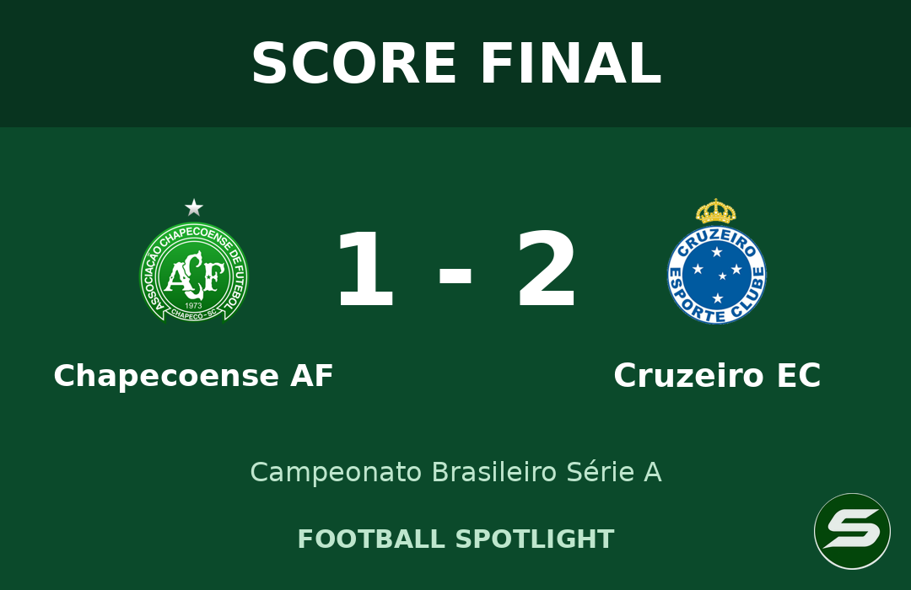

Juventus 4 - 0 Venezia FC
⏱️ TERMINÉ
⚽ JUVENTUS 4 - 0 VENEZIA FC
✅ Victoire de Juventus
🏆 Serie A · Journée 12
#Football #SerieA

⏱️ TERMINÉ
⚽ JUVENTUS 4 - 0 VENEZIA FC
✅ Victoire de Juventus
🏆 Serie A · Journée 12
#Football #SerieA
⏱️ TERMINÉ
⚽ TWENTE 2 - 1 WILLEM II
✅ Victoire de Twente
🏆 Eredivisie · Journée 13
#Football #Eredivisie

⏱️ TERMINÉ
⚽ CHAPECOENSE 1 - 2 CRUZEIRO
✅ Victoire de Cruzeiro
🏆 Campeonato Brasileiro Série A · Journée 36
#Football #CampeonatoBrasileiroSérieA

📅 MATCHS DU JOUR – lundi 23 novembre 2026
🕒 19:45 – Monza vs Fiorentina (Serie A)
🕒 20:00 – Levante vs Elche (Primera Division)
🕒 20:00 – Brentford vs Everton (Premier League)
🕒 22:30 – Internacional vs Vitória (Campeonato Brasileiro Série A)
🕒 23:00 – Botafogo vs São Paulo (Campeonato Brasileiro Série A)
🔥 Bon match à tous !
#Football